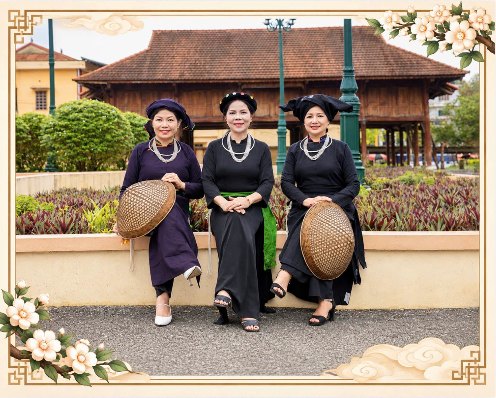

HỌC LIỆUTIẾNG
NÙNG ANLỤC YÊN · LÀO CAI
NÙNG ANLỤC YÊN · LÀO CAI
SÁCH HỌC TẬP
 MẠCH NGUỒN NÙNG AN
Bắt đầu học ↗
MẠCH NGUỒN NÙNG AN
Bắt đầu học ↗
LỤC YÊN · LÀO CAI
Lưu giữ ngôn ngữ · Kết nối văn hóa · Lan tỏa di sản
Khám phá di sản ↓CỘI NGUỒN & BẢN SẮC
Người Nùng An ở Lục Yên mang trong mình những giá trị văn hóa truyền thống đặc sắc, được gìn giữ và trao truyền qua nhiều thế hệ.
Từ tiếng nói, trang phục chàm, phong tục tập quán đến những làn điệu dân ca và câu chuyện dân gian, mỗi giá trị đều góp phần tạo nên bản sắc riêng của cộng đồng.
Mạch nguồn Nùng An là không gian số giới thiệu, lưu giữ và lan tỏa những giá trị ấy; đồng thời hỗ trợ việc học tiếng Nùng An bằng các hoạt động trực quan, tương tác.
Khám phá học liệu ↗
HỌC TẬP TRỰC QUAN
Chọn một bài học để bắt đầu. Mỗi bài gồm các hoạt động học và luyện tập theo tài liệu được cung cấp.
Mỗi bài học được chia thành sáu hoạt động tương tác.
Chọn một bài ở danh sách bên trái để xem nội dung.
Lưu ý: Nội dung bài học được chuyển từ tài liệu Word do nhóm tác giả cung cấp. Cách viết tiếng Nùng An và đáp án cần được người am hiểu ngôn ngữ rà soát trước khi công bố chính thức.
GHI NHỚ MỖI NGÀY
Lật thẻ để xem nghĩa tiếng Việt và ôn tập theo từng bài hoặc trộn tất cả thẻ.
Chưa có dữ liệu thẻ từ vựng
TỦ SÁCH SỐ
Đọc trực tiếp các ấn phẩm ngay trong website.
SÁCH HỌC TẬP
SÁCH GIAO TIẾP
SÁCH VĂN HÓA
DI SẢN PHI VẬT THỂ
Những thanh âm, câu chuyện và ký ức được trao truyền trong cộng đồng.
VIDEO VĂN HÓA NÙNG AN
Hai video tư liệu do nhóm dự án cung cấp.
VIDEO HÁT DÂN CA NÙNG AN
Ba video hát dân ca do nhóm dự án cung cấp.
DẤU TÍCH LỊCH SỬ

DI TÍCH LỊCH SỬ – VĂN HÓA
Đình, đền Đồng Xăng là di tích lịch sử – văn hóa có ý nghĩa quan trọng đối với đời sống tinh thần và lịch sử hình thành, phát triển của cộng đồng dân cư vùng đất Yên Thế – Yên Thắng, huyện Lục Yên, tỉnh Yên Bái (nay thuộc tỉnh Lào Cai).
Đình Đồng Xăng là nơi lưu giữ tín ngưỡng thờ các vị Mo đình qua nhiều thế hệ. Đền Đồng Xăng thờ Quan tri châu Lục Yên – Tăng Hán Bảo, người có công tập hợp nhân dân, lãnh đạo cuộc đấu tranh chống giặc Cờ Đen, bảo vệ quê hương.
Di tích thể hiện nét đặc sắc trong đời sống văn hóa, tín ngưỡng của cộng đồng địa phương, đặc biệt là người Nùng An; là nơi gìn giữ phong tục thờ cúng, truyền thống tri ân tiền nhân và sự gắn kết cộng đồng.
TRẢI NGHIỆM KHÔNG GIAN SỐ
Khám phá các không gian trưng bày, di chuyển và tìm hiểu hình ảnh trong bảo tàng trực tuyến.